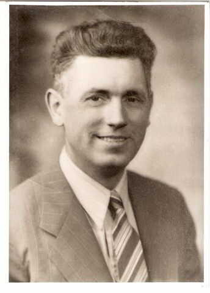
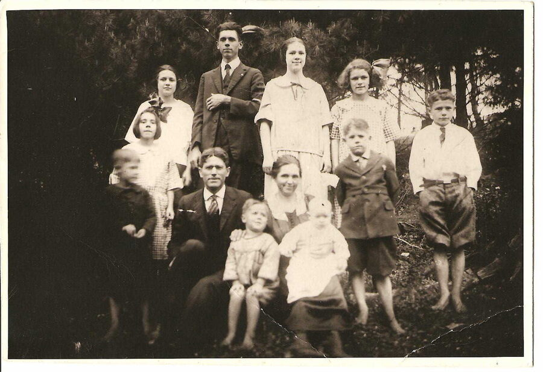
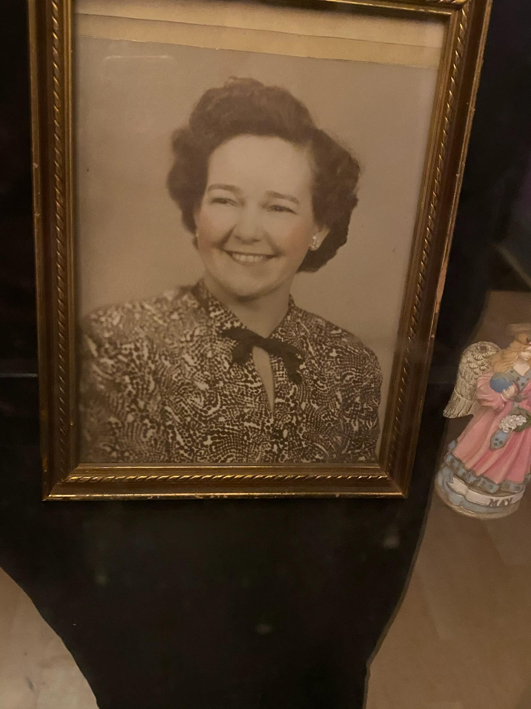
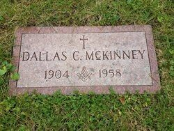

8 December 1904 – 1 December 1958
West Virginia’s birth record and Dallas’s own 1940 draft registration give his birthplace as Daniels, Raleigh County. The family account says Lester, Raleigh County. The two records support Daniels, but the family wording is preserved here.
The 10 April 1923 marriage to Laverne Hurt in Ironton, Ohio, comes from family records and compiled trees; the Lawrence County marriage record has not been found.
Dallas’s 1910 census lists “Macil,” age three, while Dallas is five. Family tradition identifies Marcil Dare McKinney as his twin, but the census ages do not support that exact claim. FamilySearch also splits “Macil Dara” and “Maysel Dora” into separate daughters. The 1904 Raleigh County birth register may resolve the identity.
The 1940 draft card records Dallas’s employer as Anderson Air Plane School in Los Angeles, but his home address remained R-1, Beckley, and no record places him in California. The card establishes registration, not military service. His grave marker carries a Masonic square and compass, but no lodge record has been found.
The 1958 Ohio death index and Social Security index give Dallas’s death as 1 December 1958. The photographed Spring Grove marker reads 1904–1958. A compiled family database’s “Sugar Grove Cemetery” entry and an Ancestry tree’s 1973 death date conflict with these records and are not used.
His grandson recalled that Dallas died of a stroke and remembered him fondly. A family member also relayed stories of abuse told by Dallas’s son Ed; that account is retained separately as family testimony and is not independently verified.
8 December 1904 · Birth · age 0
Born in Daniels, Raleigh County, West Virginia, according to the state birth record and his own 1940 draft registration. The family account gives Lester as the birthplace.
1910 · Parents’ household · reported age 5
Enumerated with parents Wesley and Genettie McKinney in Forest Hill, Summers County, West Virginia. His father was recorded as a schoolteacher.
1920 · Parents’ household · reported age 15
Enumerated with his parents’ family in Beckley, Raleigh County, West Virginia.
10 April 1923 · Marriage to Laverne Hurt · age 18
The family record gives the marriage in Ironton, Lawrence County, Ohio. The original county marriage record has not been located.
21 January 1924 · Son Jackson Ahmeek born · age 19
Born in Beckley, West Virginia. The 1924 date is used because the 1930 census lists him as six; one Ancestry tree gives 1923, which would predate the reported marriage.
16 October 1928 · Son Edgar born · age 23
Born in Beckley, West Virginia. Some compiled trees give 1929; the 1930 census age and family record support 1928.
April 1930 · Town district household · age 25
The census lists Dallas, wife Laverne, and sons Jackson and “Edward A.” in Raleigh County, West Virginia.
12 January 1931 · Daughter Edna Ellen born · age 26
Born in West Virginia.
10 July 1932 · Daughter Ruth Laverne born · age 27
Born in Beckley, Raleigh County, West Virginia.
16 October 1940 · Draft registration · age 35
Registered at Mt. Tabor, Raleigh County. The card gives Daniels as his birthplace, R-1 Beckley as his residence, Laverne as his wife and contact, and carpenter as his occupation in the 1940 census. The named Los Angeles employer does not establish that he lived or worked in California.
After 1945 · Move to Cincinnati · age 40 or older
Family research places the move north after the war and before his 1958 death; the exact year has not been established.
1955 · Daughter Ruth’s marriage · age 50
Ruth married Lawrence Richard Shamblen in the Cincinnati area.
1 December 1958 · Death · age 53
Died in Cincinnati, Hamilton County, Ohio, and was buried at Spring Grove Cemetery. The Ohio death index and grave marker support the 1958 date.
Dallas Cecil McKinney was born on 8 December 1904 in Raleigh County, West Virginia, the son of Wesley Mathew McKinney and Genettie Ellen Canaday. His West Virginia birth record, and his own hand on his 1940 draft card, give the place as Daniels; the family has always said Lester. Family tradition makes him the twin of his sister Marcil Dare, the first of ten children, though the records have not yet settled that.
His father was a schoolteacher, and in 1910 the young family lived at Forest Hill in Summers County. By 1920 they were in Beckley, in the heart of the southern coalfields, where the county seat was growing fast around the mines and the railroad.
On 10 April 1923, by the family record, Dallas married Laverne Hurt of Beckley across the river in Ironton, Ohio. He was eighteen and she was sixteen. Their children were Jack, born in 1924; Edgar, in 1928; Edna Ellen, in 1931; and Ruth Laverne, in 1932. The 1930 and 1940 censuses find the family in the Town district of Raleigh County, with Dallas working as a carpenter in 1940.
In October 1940, at thirty-five, Dallas registered for the draft at Mt. Tabor, near Beckley. The registrar wrote him down as five foot ten, 180 pounds, with brown eyes, brown hair and a dark complexion. The card names his employer as the Anderson Air Plane School in Los Angeles, a trade school for aircraft builders, but it gives his home as Beckley, and no record puts him in California. No military service has been found for him.
Sometime after the war, Dallas moved the family north to Cincinnati, where, the family says, he worked in civilian trades and manufacturing. His grandson remembers him fondly. Dallas died in Cincinnati on 1 December 1958, at fifty-three, of a stroke by the family's account. He was buried at Spring Grove Cemetery under a flat stone with a cross at the top and the Masonic square and compass between the years. Laverne was laid beside him in 1986.
More of Dallas's story will be added as family members share their memories.



In a Facebook Messenger conversation dated 5 October 2026, Lisa Graff (Rick's cousin-in-law, married to Dallas and LaVerne's son Ed/Edgar) reported: “And it wasn't until Sona died and I was trying to put Ed in a nursing home that he shared stories about how abusive his father was and I had also heard stories that Nanna was too.” Lisa added: “Most of the abuse were centered on Jack, the oldest”. This is Lisa's account of stories Ed shared with her and what she had heard.
No DNA matches linked yet.
Have a story, photo, correction or record about Dallas to share? Leave a note in Dallas's profile feedback doc. We check each note and update this profile.
Profile history: Family Notes section added 14 November 2026 to match the current profile layout; existing content preserved.